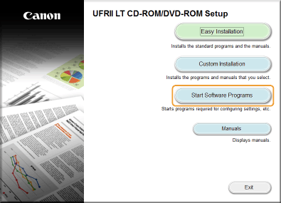
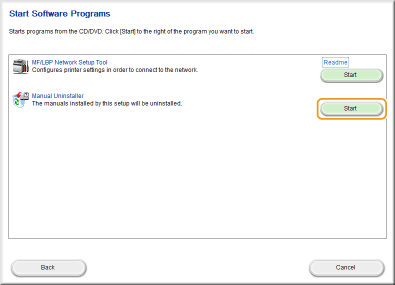
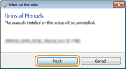
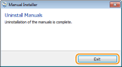
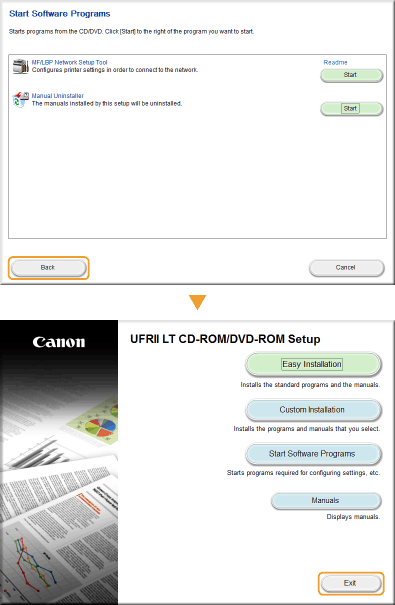

Uninstalling the e-Manual
You can remove the e-Manual from the computer to restore the computer to the same state it was in before the e-Manual was installed.
1
Insert the User Software CD-ROM/DVD-ROM into the drive on the computer.
2
Click [Start Software Programs].


If the above screen does not appear Displaying the [CD-ROM/DVD-ROM Setup] Screen
If [AutoPlay] is displayed, click [Run MInst.exe].
3
Click [Start] for [Manual Uninstaller].

4
Click [Next].

 |
The uninstall begins.
|
5
Click [Exit].

6
Click [Back]  [Exit].
[Exit].
